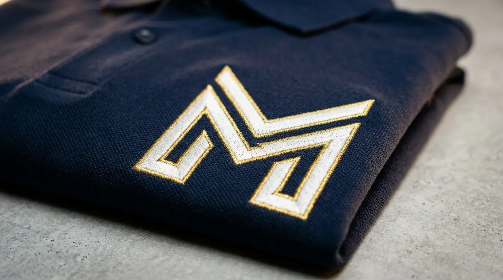

Produk yang Paling Umum Dijadikan Merchandise Custom
Produk yang paling umum dijadikan merchandise custom adalah produk dengan permukaan datar atau cukup luas untuk menampung logo secara jelas.
- Tumbler dan botol minum stainless.
- Tas kanvas, tote bag, dan ransel.
- Kaos, polo shirt, dan jaket.
- Payung, topi, dan aksesori luar ruangan.
- Powerbank, flashdisk, dan aksesori elektronik.
Pemilihan produk biasanya disesuaikan dengan tujuan penggunaan, apakah untuk kebutuhan harian, event, atau hadiah premium.
Teknik Sablon untuk Merchandise Custom Perusahaan
Teknik sablon cocok digunakan pada produk berbahan kain dan cocok untuk pemesanan dalam jumlah besar dengan desain logo yang relatif sederhana.
Sablon umumnya digunakan pada kaos event, tote bag, dan goodie bag karena proses pengerjaannya efisien untuk kuantitas besar. Hasil sablon memiliki daya tahan yang baik selama proses pencucian dilakukan sesuai anjuran.

Teknik Bordir untuk Merchandise Custom Perusahaan
Teknik bordir memberikan kesan premium dan lebih tahan lama dibandingkan sablon, sehingga sering dipilih untuk produk seragam dan aksesori formal.
Bordir umumnya diaplikasikan pada jaket, topi, dan polo shirt karena hasilnya lebih rapi dan tidak mudah pudar dalam jangka panjang. Teknik ini cocok untuk logo dengan detail sedang hingga kompleks.
Teknik Cetak Digital dan Laser Engraving untuk Produk Keras
Teknik cetak digital dan laser engraving digunakan pada produk berbahan keras seperti plastik, logam, dan kaca yang tidak dapat disablon atau dibordir.
- Cetak digital/UV print cocok untuk tumbler, mug, dan produk plastik.
- Laser engraving cocok untuk botol logam dan produk metal lain.
- Kedua teknik ini menghasilkan detail logo yang presisi dan tahan lama.
- Pemilihan teknik disesuaikan dengan jenis permukaan dan warna dasar produk.
"Kualitas hasil custom logo sangat memengaruhi daya tahan tampilan produk, terutama untuk merchandise yang digunakan setiap hari."
— Erlang Sinatrya, Penulis Merchandise Kantor
Tips Memilih Bahan Merchandise Custom yang Tahan Lama
Pemilihan bahan yang tepat memengaruhi daya tahan logo dan tampilan produk dalam jangka panjang, terutama untuk produk yang digunakan setiap hari.
- Pilih bahan stainless steel untuk tumbler agar logo laser lebih awet.
- Pilih kain katun combed untuk kaos agar sablon tidak mudah retak.
- Pilih bahan kanvas tebal untuk tas agar bordir tidak mudah lepas.
- Sesuaikan ukuran logo dengan luas permukaan produk agar detail tetap terlihat jelas.

Kesimpulan
Ingin mencetak logo perusahaan pada merchandise custom dengan hasil rapi dan tahan lama? Merchandise Kantor menyediakan berbagai pilihan produk dan teknik custom logo sesuai kebutuhan Anda. Hubungi kami sekarang untuk konsultasi produk dan simulasi harga.